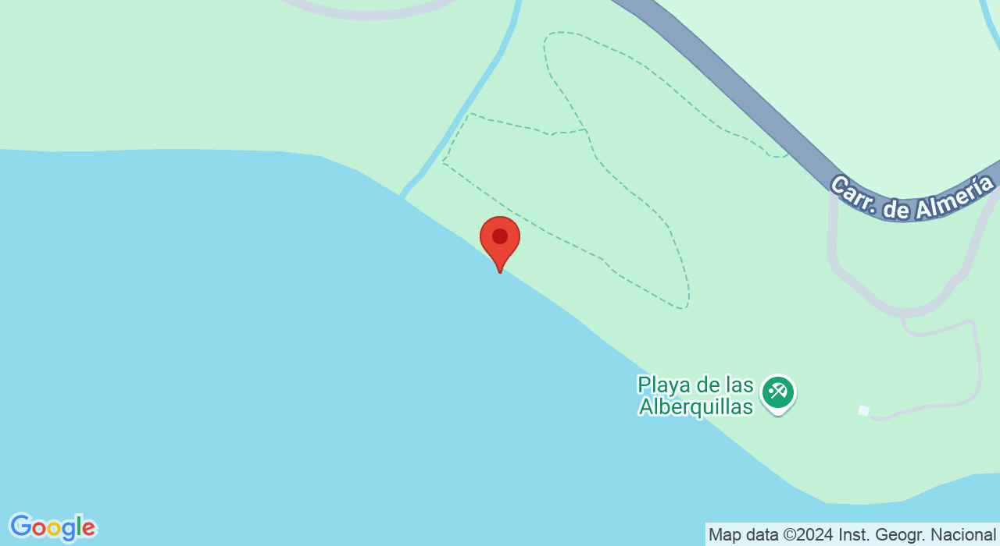

La playa el Cañuelo, en Nerja, es la última playa del municipio malagueño, en el límite de la provincia entre Granada y Málaga. Está situada en pleno paraje natural Acantilados de Maro-Cerro Gordo, caracterizado por los abruptos e increíbles acantilados que presenta. Es una playa aislada y rústica rodeada de un entorno natural de gran belleza. Con un acceso no demasiado sencillo, pero que le proporciona aún más encanto, pues parece una playa secreta dotada de un clima inmejorable y con baja ocupación.
Las calas del cañuelo tiene diversas actividades que harán que no te aburras, por ejemplo: puedes disfrutar de un dia de acampada al aire libre con supervision de monitoresy actividades en el campo.
Alquila una casa de 300 metros cuadrados por solo 280$ ¡Con piscina incluida y animacion gratuita!
PRECIO TOTAL:400$ DESCUENTO:400-30%=280$ 